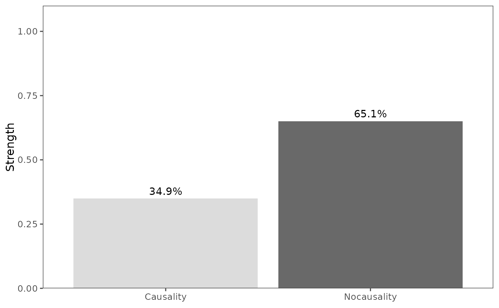

Visualizes the total pattern causality strength as a barplot.
This function takes a pc_fit object and generates a barplot showing the
overall causality strength.
References
Stavroglou et al. (2020) doi:10.1073/pnas.1918269117
See also
plot_components for visualizing individual causality components.
Examples
data(climate_indices)
X <- climate_indices$AO
Y <- climate_indices$AAO
pc_result <- pcLightweight(X, Y, E = 3, tau = 2, metric = "euclidean", h = 1, weighted = TRUE)
plot_total(pc_result)
